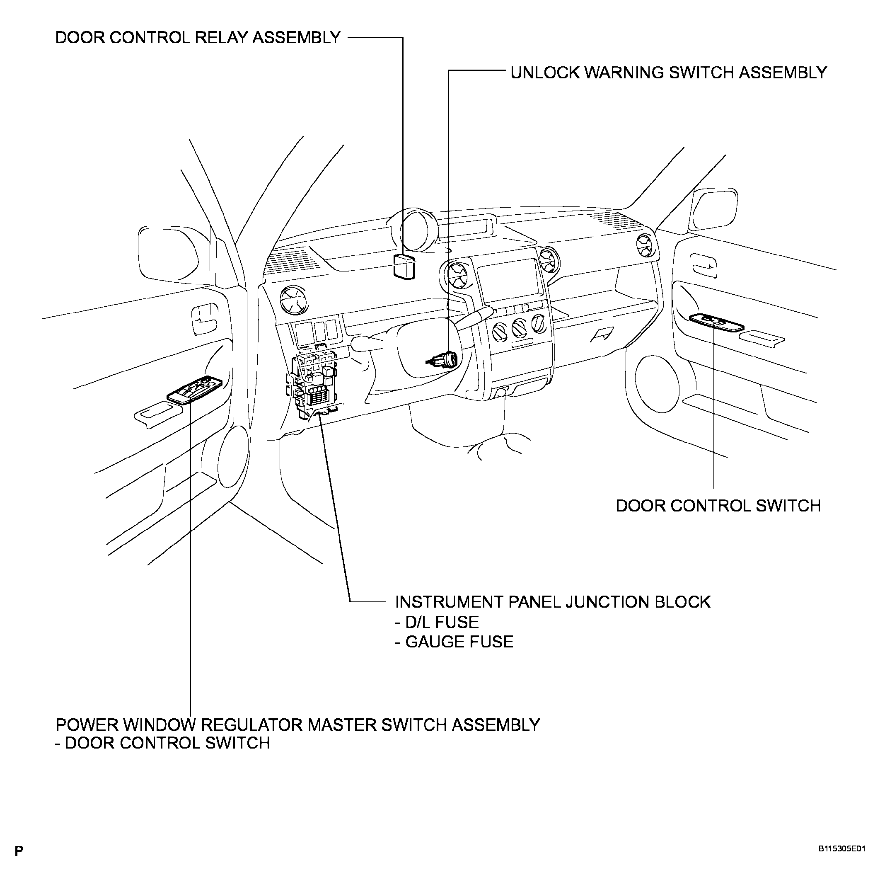

Parts Location
Fig 1: Identifying Power Door Lock Control System Part Location (1 Of 2)

Courtesy of © TOYOTA, LICENSE AGREEMENT TMS1002
Fig 2: Identifying Power Door Lock Control System Part Location (2 Of 2)
Courtesy of © TOYOTA, LICENSE AGREEMENT TMS1002
 Courtesy of © TOYOTA, LICENSE AGREEMENT TMS1002
Courtesy of © TOYOTA, LICENSE AGREEMENT TMS1002